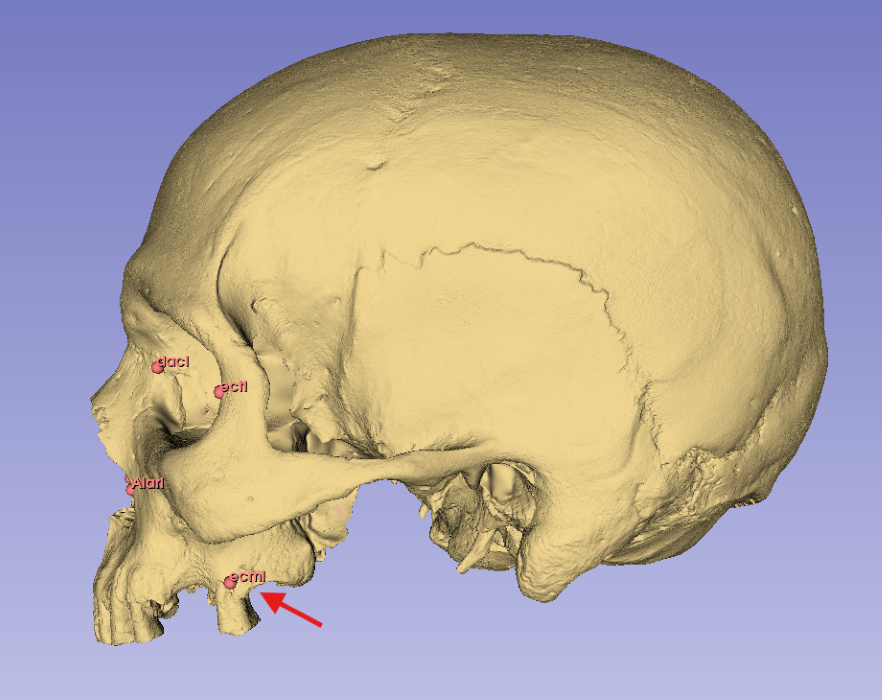
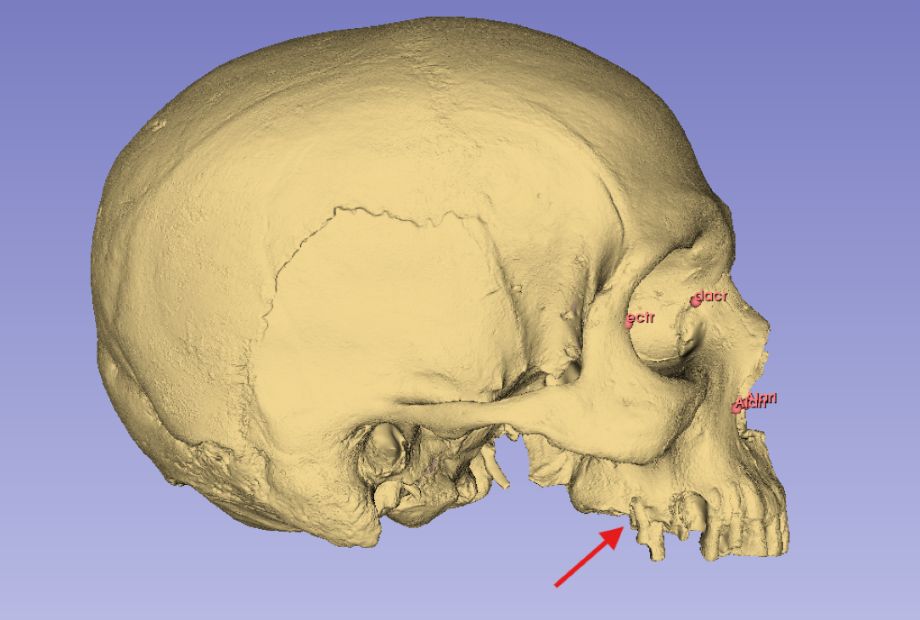
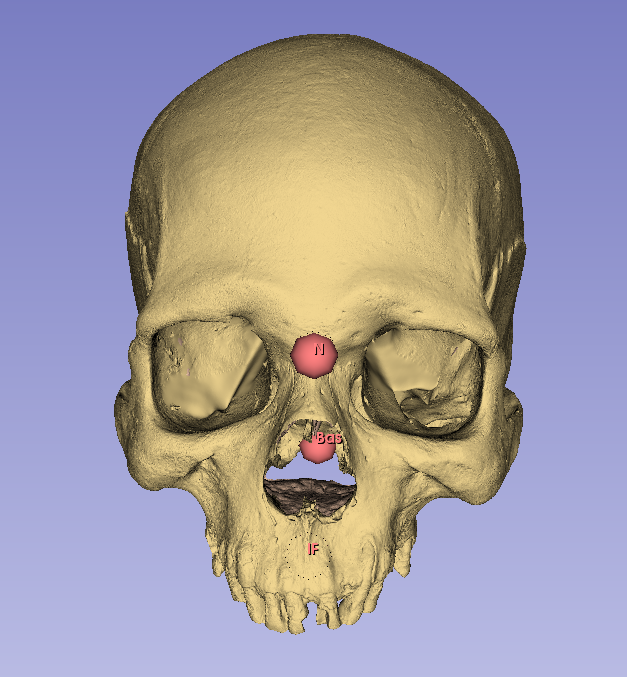
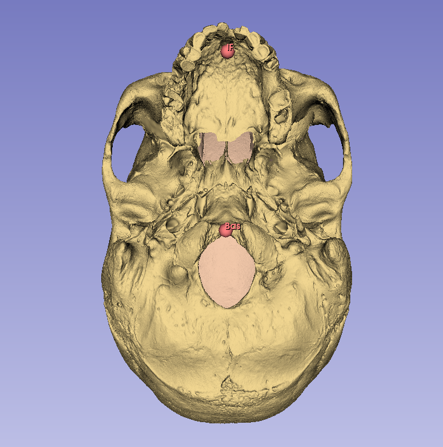
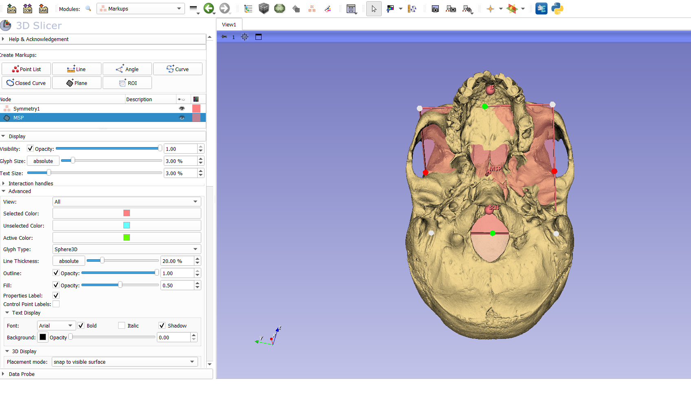
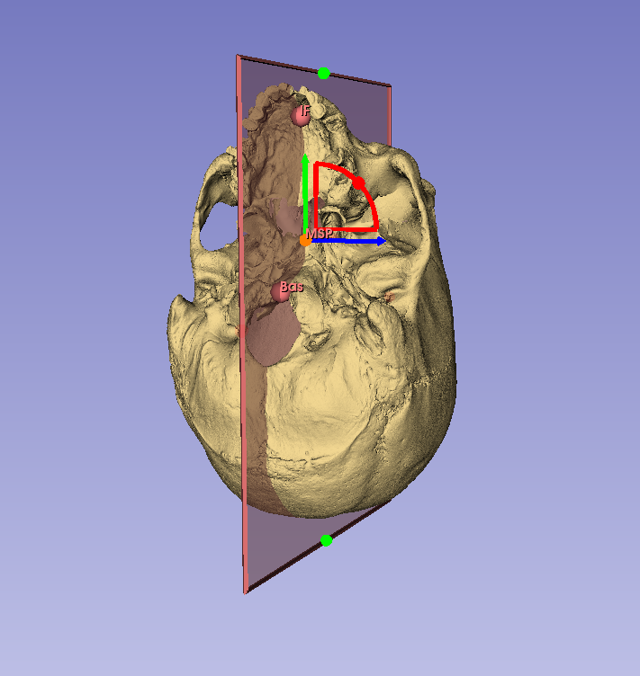
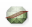
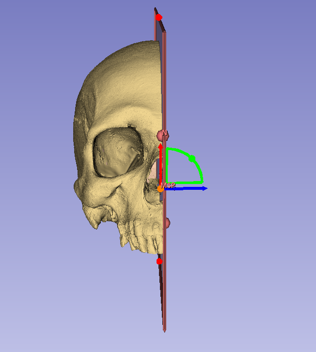
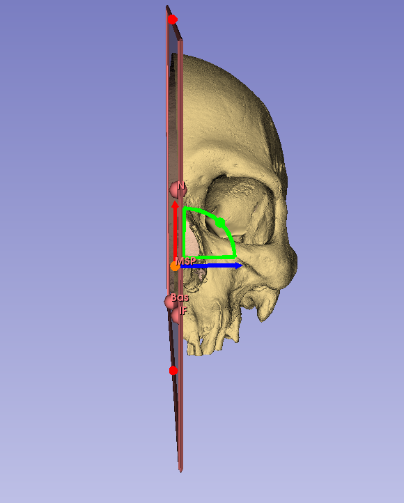
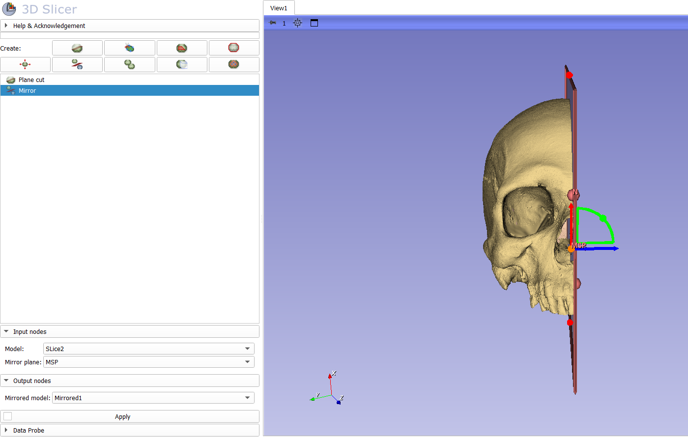

Mirroring
Missing Data
A problem that I will inevitably face in this project is that imposed by fragmentary crania that are missing necessary morphologies for landmarking. Runnng morphometric assessments requires that all specimens under consideration have the same complete sets of landmarks (Gunz et al. 2009). Thus, any specimen that cannot be completely landmarked is rendered useless for the analysis. With limited fossil assemblages, such constraints severly limit the ability to investigate questions of variation over time. Fortunately, some of the issues arising from fragmentary remains have been remedied by digitally exploiting the tendancy towards bilateral symmetry in vertebrate morphology (Gunz et al. 2009; Toxvaerd 2021). As is observed on the Morphometrics page, landmarks can be paired (bilateral) or unpaired. Assuming that the crania are largely symmetrical therefore allows us to “mirror” a single paired landmark from on side of the specimen to the other. Gunz et al. (2009) and Lautenschlager (2016) discuss the common approaches to this task through the production of landmark-based algorithms to approximate the location of the missing coordinate. These predominate strategies include 1) mirroring across an empirical midplane, 2) reflected relabeling, and 3) reflection using the thin-plate spline. Of these, I will employ a strategy most similar to Gunz et al.’s depiction of mirroring across an empirical plan. The deviation I make in my approach, however, is something to consider.
The empirical plane that is used in these approaches is the Midsagittal Plane (MSP) that bisects the skull in left and right halves. One approach to identifying this plane with skeletal structures is to identify common midsaggital landmarks that, hypothetically at least, fall along this plane. Such landmarks include Nasion along the frontonasal suture, Basion along the anterior middorsal aspect of the foramen magnum, the Anterior Nasal Spine situated at the base of the nasal aperture along the MSP (on the anterior nasal spine)(Green, Bloom, and Kulbersh 2017). Though these landmarks are said to be found along the MSP, Gunz et al. (2009) suggest that this is somewhat of an abstraction and that the points do not actually lie exactly on a plane. Because of this they recommend computing the actual plane through a larger analysis of all unpaired landmarks to find an “empirical midplane” which paired landmarks can be mirrored across. I deviate from this logic by following Green, Bloom, and Kulbersh (2017) who illustrated the higher efficacy of a landmark guided MSP over the calculated midplane. The following workflow is therefore a description of how I plan to mirror paired landmarks across a MSP established using unpaired coordinates.
The Problem
To set up the problem, the skull I am examining here is missing the necessary morphology to get a good landmark on Ectomolare. This point (see data dictionary) is situated on the lateral most aspect of the buccal alveolar margin, at the center of the second molar position.


In the above image (fig.1) I illustrate damage along the buccal alveolar margin that makes it impossible to landmark the Right Ectomolare (ecmr) coordinate. The left side of the alveolar margin, however, is intact and has the needed landmark (ecml). To obtain the missing data (ecmr) I will need to
1) Create a plane of symmetry (MSP)
2) Bisect the skull along that plane
3) Mirror the intact side of the skull
4) Place the needed landmark on the mirrored image
5) Replace the mirrored model with the original skullDefining the Midsagittal Plane (MSP)
Following Green, Bloom, and Kulbersh (2017) I will use the Nasion (N), Basion (Bas), and Incisive Foramen (IF) landmarks to define the MSP (fig.2). Landmarking protocol can be found under the “Landmark Configuration” section on the Morphometrics page.
- Place landmarks at N, Bas, and IF


- In the Markups module find the
Planefunction- This is in the upper
Create Markupsmenu - When you click on
planea new node will be provided for you in theNodemenu (along with the coordinate set already established. - Before messing with this, rename the plane (MSP) by right clicking the node.
- This is in the upper
- Like the fiducial points applied for landmarks, the plane tool is at first a drag-and-drop function
- Drop the midpoint of the new plane approximately on the midline
- This will be adjusted so don’t stress the initial drop

- Right click on the central node of the new plane (labeled MSP)
- there will be a tab for
Interaction Options - Turn on both
TranslateandRotate - Adjust the plane so that it passes through each of the three midsagittal landmarks
- N, Bas, and IF
- Expand the margins of the plane so that you can clearly see it during adjustment
- there will be a tab for

Bisecting the Digital Model
With the midsagittal plane set, we can now bisect the model along it’s placement.
- Find the Surface Models tab in the dropdown menu and select
Dynamic Modeler- Within the
Createmenu in the top left of the window, find this
icon labelledPlane Cut
- Within the
- There are a couple of fields in the lower menus that you will fill out.
- In the
Input nodeswindow select your base model for themodel nodeand the MSP (that you just made) forPlane node 1 - In the
Output nodesyou can choose either the positive or negative side for the output model. So far it seems that the positive side is the left and the negative the right. - Under the desired menu (positive or negative), select
Create new model as... - Title appropriately
- Once you choose your output model, select
Applyat the bottom
- In the
- Nothing will change in this screen after you apply the bisection
- Navigate back to your
Datawindow - Make your primary model invisible
- Make your new bisected model visible
- Voila
- Navigate back to your


Mirroring your model
The last step in this process is mirroring the complete side of your model so that missing landmarks can be placed.
- Navigate back to the
Dynamic Modelerwindow- Found in the drop down under
Surface Models
- Found in the drop down under
- In the
Createmenu, find theMirroricon - You will again be given options for Input and Output
- For the Input, select the new bisected model that you want to be mirrored and the plane (MSP) that you wish to mirror on
- For the Output, select
Create new model as...and label appropriately

- Navigate back to
Datawindow and landmark along your mirrored model- Be sure to turn off the mirror visibility (and make the original model visible) when not using